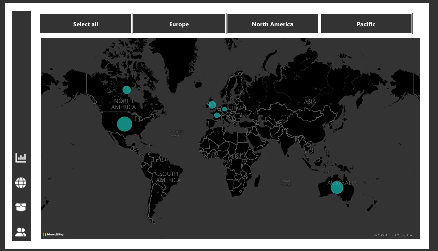
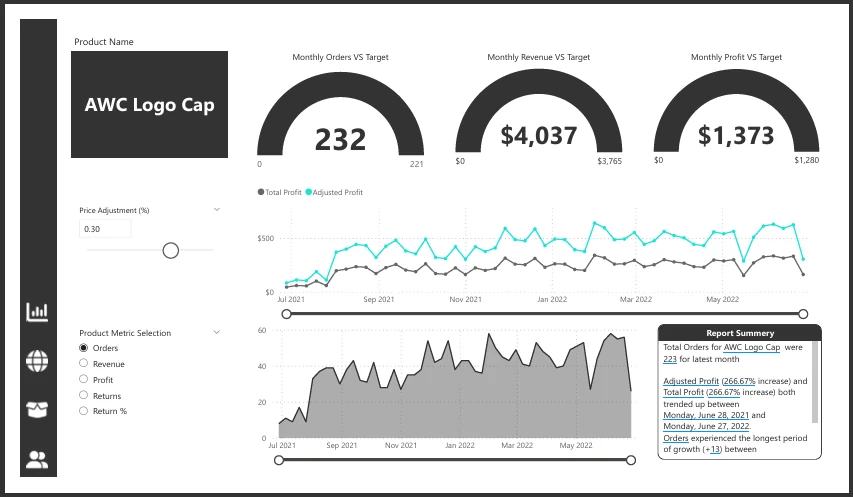
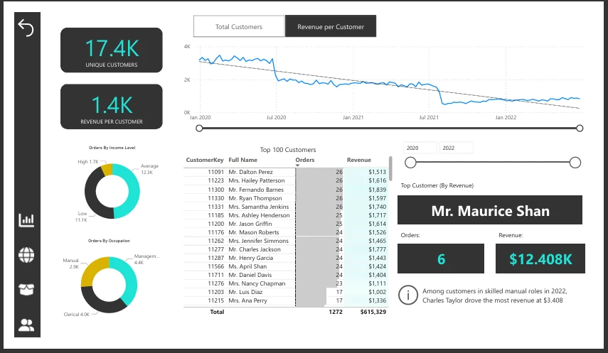

Executive overview
A starting point for reviewing revenue and key sales indicators before moving into the detail.
An executive-to-detail sales dashboard covering revenue, regional performance, products and customer segments.

A sales team needs more than a single headline number. It needs a connected view of overall performance, the regions contributing to it, and the products and customers behind it.
I organized the report into an executive overview and focused geographic, product and customer views. Power BI and DAX support the report calculations, with SQL included in the project’s analysis toolset.
A starting point for reviewing revenue and key sales indicators before moving into the detail.
Dedicated views make geographic differences and product-level order performance easier to investigate.
A customer analytics view connects the sales picture to the people and segments behind it.
Four connected report views give stakeholders a structured way to move from a business question to the supporting detail. The project documentation provides additional context for reviewing the work.
Open any screenshot to view it at full size.



UP NEXT / 03
Call Center PerformanceA new dashboard, a reporting bottleneck, or data that needs a clearer story. Tell me what you’re working on.
omarmagdy99860@gmail.comCairo, Egypt · Working remotely with clients worldwide
Looking for something similar for your business?
Discuss your project